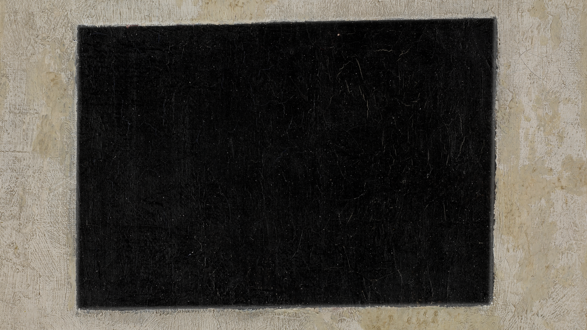
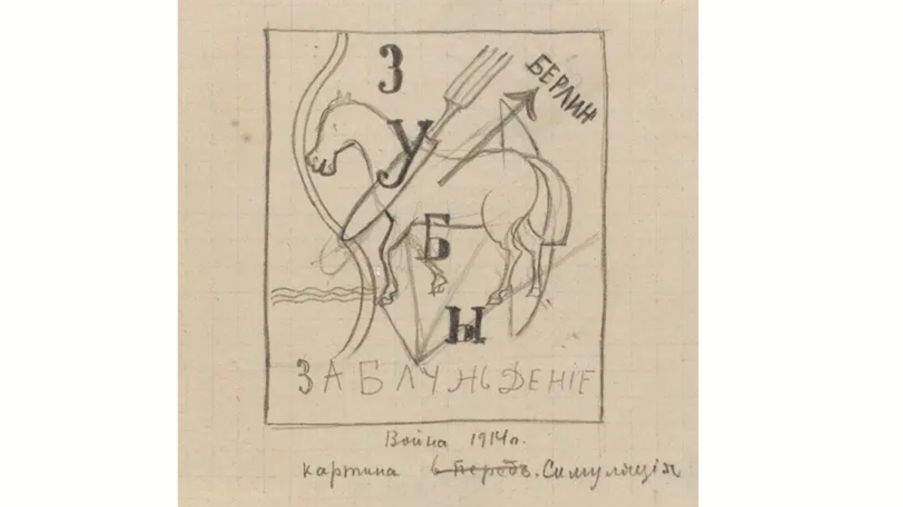
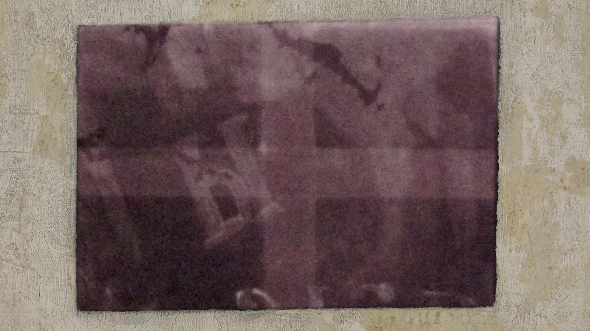

BRAVO!
Cuando la especialista en conservación de arte Maria Kokkori analizó el cuadro Cuadrilátero Negro, la radiografía reveló rastros de una pintura anterior debajo de ella.
 Era parte de un cuadro perdido, uno de cuyos bocetos se conoce con el título Guerra (1914) y representa un caballo con las palabras “Berlín”, “Guerra”, “Dientes”, “Falacia”, “Pintura” y “Simulación” (colección Khardzhiev, Museo Stedelijk, Ámsterdam).
Según Kokkori, casi no se encontró polvo entre las dos capas de colores, lo que significa que Malevich pintó esta obra suprematista justo después de haber completado la pintura anterior, lo que convierte al Cuadrilátero Negro en una de las primeras obras de pintura suprematista y nos lleva a fecharlo con seguridad en 1915.